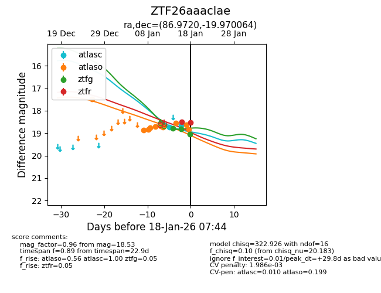
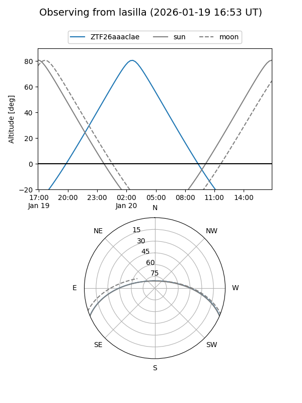
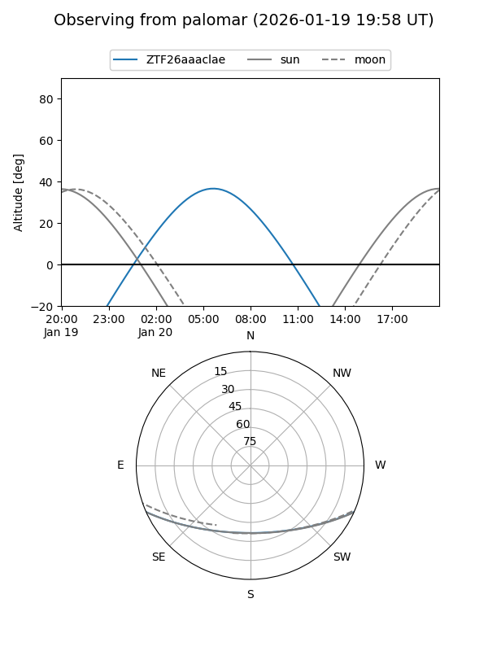
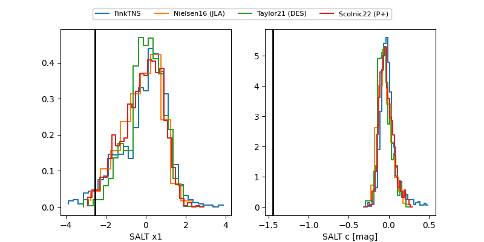

ZTF26aaaclae
Target ZTF26aaaclae at 2026-01-18 07:45
Aliases and brokers:
FINK: link
Lasair: link
ALeRCE: link
alt names
ZTF26aaaclae (ztf,fink_ztf)
Coordinates:
equatorial (ra, dec) = 86.9720,-19.97006
equatorial (HMS+DMS) = 05:47:53.27,-19:58:12.23
galactic (l, b) = (224.5975,-22.62613)
Flags:
likely cv
Photometry:
last atlasc=18.67, atlaso=18.84, ztfg=19.05, ztfr=18.53
2 atlasc, 10 atlaso, 3 ztfg, 2 ztfr detections
Lightcurve

Visibility


Additional plots
